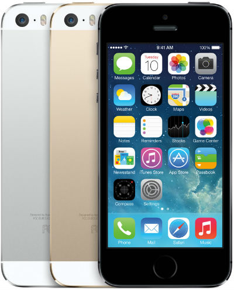

DeviceShop
IPhone 5S
Представитель седьмого поколения продвинутых смартфонов от Apple (младший в линейке — имеет 16 ГБ встроенной памяти). В полном соответствии с названием, во многом схож с предыдущей «чистой» пятой моделью: в частности, iPhone 5S имеет такой же 4" дисплей и характерный металлический корпус. Впрочем, корпус обзавёлся новыми вариантами расцветки, а начинка претерпела серьёзные изменения. Так, эта модель стала первым в мире смартфоном с 64-битным процессором на борту и соответствующей программной частью. Появился сканер отпечатка пальца (TouchID), а основная камера при тех же 8 Мп получила ряд улучшений. То же касается и сенсора, отслеживающего движения.
Характеристика товара
Apple iPhone стал еще быстрее и вместе с тем изящнее. Толщина Apple iPhone 5 – всего 7,6 миллиметра, а вес – около 112 граммов, что на 18% тоньше и на 20% легче по сравнению с iPhone 4S. Своего владельца модель также порадует широчайшими возможностями, увеличенным дисплеем, мощным аккумулятором, новейшими технологиями и многим другим.
- СОВЕРШЕННЫЙ В ДЕТАЛЯХ Смартфон Apple iPhone 5s – это целый набор потрясающих технологий в удивительно тонком и легком металлическом корпусе. Датчик идентификации по отпечатку пальца Touch ID. A7 – первый мобильный процессор с 64-битной архитектурой. Улучшенная, еще более впечатляющая камера iSight. И сверхскоростная беспроводная связь.
- НОВЫЙ СТАНДАРТ УДОБСТВА Apple создала смартфон, сочетающий в себе самые передовые технологии, толщиной всего лишь 7,6 мм и весом 112 г. Была проделана огромная работа по изменению множества компонентов и созданию новых. В результате появился невероятно тонкий, легкий и мощный смартфон. Apple iPhone 5s обогатился новыми технологиями, не став больше или тяжелее.
- ОТПЕЧАТОК ПАЛЬЦА – ЛИЧНЫЙ МАСТЕР-КЛЮЧ Датчик Touch ID развивает идею использования прикосновений, ведь самый надежный пароль – это отпечаток пальца. Он всегда с вами, его не надо придумывать и запоминать. Традиционная для iPhone кнопка "Домой" была изменена. Поверхность новой кнопки вырезана лазером из сапфирового стекла. Ее окружает кольцо из нержавеющей стали, которое определяет положение пальца, активирует сенсор и улучшает коэффициент "сигнал/шум". Совершенная технология не влияет на работу пользователя. Разве что разблокировать iPhone стало еще проще.
- НЕИЗМЕННО ВЫСОКАЯ СКОРОСТЬ РАБОТЫ Для Apple iPhone 5s разработаны совершенно новые процессор и сопроцессор A7 и M7, которые позволили заметно повысить производительность смартфона и реалистичность графики без ущерба для энергоэффективности. Скорость графики и общая производительность выросла в два раза по сравнению с предыдущим поколением iPhone. Сопроцессор M7 позволяет Apple iPhone 5s работать еще более эффективно, обрабатывая сигналы движения акселерометра, гироскопа и компаса и разгружая тем самым основной процессор.
- САМАЯ ПОПУЛЯРНАЯ КАМЕРА Смартфон Apple iPhone 5s снабжен 8-Мп камерой iSight с ультрасовременным увеличенным сенсором, который больше предыдущего на 15%. С увеличением сенсора увеличился размер каждого пикселя, что напрямую влияет на улучшение качества съемки. Светочувствительность камеры возросла на 33%. Это очень важно, так как качество, яркость и цветопередача напрямую зависят от количества проходящего света. В дополнение к этому, новая вспышка True Tone автоматически определяет, сколько света требуется для каждого снимка.
- УНИКАЛЬНАЯ СИСТЕМА. НЕПОВТОРИМЫЙ ТЕЛЕФОН iOS 11 – это самая совершенная, многофункциональная и безопасная операционная система для мобильных устройств во всем мире. Она становится еще более удобной и незаменимой благодаря новым встроенным приложениям, расширенным возможностям Siri и другим функциям. Тесная интеграция с аппаратным обеспечением Apple гарантирует превосходную совместную работу оборудования и ПО. А в App Store есть множество замечательных приложений, способных в полной мере использовать широкие возможности iPhone.
Подробное описание товара
| Общие характеристики | |
| Тип | Смартфон |
| Операционная система | IOS 12 |
| Количество sim-карт | 1 |
| Тип sim-карты | nano SIM |
| Вес | 112 г |
| Размер(Ш*В*Т) | 58.6x123.8x7.6 мм |
| Экран | |
| Тип экрана | цветной, сенсорный |
| Диагональ | 4 дюйм. |
| Размер изображения | 1136x640 |
| Тип сенсорного экрана | мультитач, емкостный |
| Мультимедия | |
| Разрешение основной (тыловой) камеры | 8 МП |
| Макс. разрешение видео | 1920x1080 |
| Макс. частота кадров видео | 30 кадров/с |
| Фронтальная камера | есть, 1.2 МП |
| Аудио | MP3, AAC, WAV |
| Разъем для наушников | 3.5 мм |
| Связь | |
| Стандарт | GSM 850/900/1800/1900, LTE 1/2/3/5/7/8/20, 3G, 4G, GPRS, EDGE |
| Интерфейсы | Wi-Fi 802.11, Bluetooth 4.0 |
| Спутниковая навигаци | GPS/ГЛОНАСС/A-GPS |
| Память и процессор | |
| Процессор | Apple A7 |
| Количество ядер процессора | 2 |
| Объем встроенной памяти | 16 Гб |
| Объем оперативной памяти | 1 Гб |
| Питание | |
| Тип аккумулятора | Li-Ion |
| Аккумулятор | несъемный |
| Время работы в режиме разговора | 10 ч |
| Время работы в режиме ожидания | 250 ч |
| Время работы в режиме прослушивания музыки | 40 ч |
| Тип разъема для зарядки | Apple-Lightning |